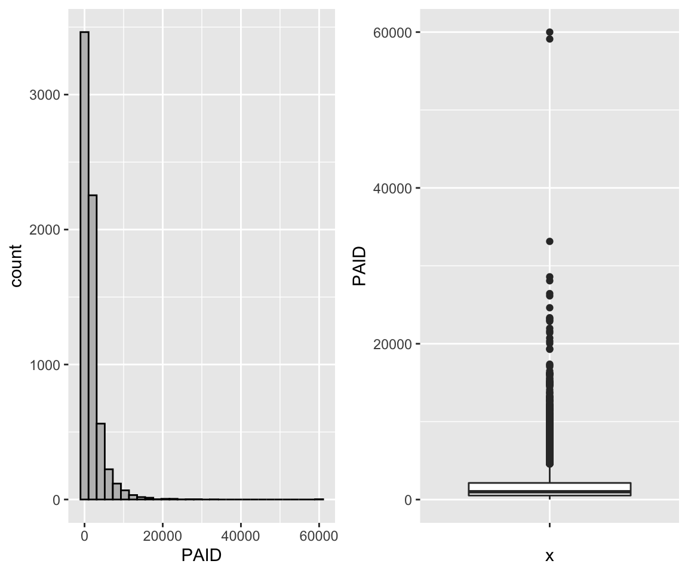

Content
What is the main message you want to get across?
Define terms early
Make clear transitions between parts of your presentation
Make your data/ figures meaningful
Summarize
Create an (organized) outline of your presentation
If you are interested in setting up R and RStudio on your computer you can find a full guide here
library(tidyverse)## ── Attaching packages ──────────────────────────────────────────────────────────────────────── tidyverse 1.2.1 ──## ✔ ggplot2 3.2.1 ✔ purrr 0.3.3
## ✔ tibble 2.1.3 ✔ dplyr 0.8.3
## ✔ tidyr 0.8.3 ✔ stringr 1.4.0
## ✔ readr 1.3.1 ✔ forcats 0.4.0## ── Conflicts ─────────────────────────────────────────────────────────────────────────── tidyverse_conflicts() ──
## ✖ dplyr::filter() masks stats::filter()
## ✖ dplyr::lag() masks stats::lag()library(forcats)
# For data
library(VGAMdata)
library(insuranceData)
# For reproducibility
set.seed(1337)Vocabulary Review
Boxplots
Group Discussion
Written Evaluation (10 minutes - 3 short questions)
Mentorship Program
Mean (also called an average, simple average, or arithmetic mean) is the sum of all elements divided by the count of all the elements.
\[ \text{mean}(X) = \bar{X} = \frac{X_1 + X_2 + X_3 + \dots + X_N}{N} = \frac{1}{N} \sum_{i=1}^{N}\left( X_i \right) \]
# Vector of integers from 1 to 100
x <- 1:100
# Mean
mean(x)## [1] 50.5sum(x) / length(x)## [1] 50.5Median - Median is the special name we give to the 2nd Quartile / 0.5 Quantile. It is the number for which 50% of the data is below it. (Essentially the point that splits your data in half)
median(x)## [1] 50.5Variance is the average squared distance of your datapoints from the mean. It measures how much the data is spread out from the mean.
\[ \text{ (sample) }Var(X) = \frac{\sum\left( X_i - \bar{X} \right)^2}{N-1} \]
Standard Deviation is the average distance (deviation) of datapoints from the mean. It’s also the square root of the variance
\[ \text{ (sample) }SD(X) = \sqrt{\frac{\sum\left( X_i - \bar{X} \right)^2}{N-1}} = \sqrt{Var(X)} \]
sd(x)## [1] 29.01149sqrt(sum((x - mean(x))^2) / (length(x) - 1))## [1] 29.01149sqrt(var(x))## [1] 29.01149Quartiles are a set of numbers that split our dataset into quarters (25%). So:
1st Quartile is the number below which 25% of our data is located 2nd Quartile is the number below which 50% of our data is located (Median!) 3rd Quartile is the number below which 75% of our data is located
Interquartile range is just the difference between the 3rd Quartile and the 1st Quartile. This means that the middle 50% of the data lies in that range.
Proportion
Outlier
Outliers are the unusual observations. In this course we define the outlier to be an observation that lies outside of a range. (Which is quite common for large datasets)
\[ \text{Range} = [Q_1 - 1.5\text{IQR}, Q_3 + 1.5\text{IQR}] = \\ = [Q_1 - 1.5(Q_3 - Q_1), Q_3 + 1.5(Q_3 - Q_1)] \]
Boxplot is a type of plot for numerical data. It shows the median, 1st and 3rd quartiles, the interquartile range, and outliers into a single plot.
Example in the section below
R object
Vector
Variable Types
Data Frame / Tibble
Summary Table
Summary Statistics
When to use boxplots?
When you want to summarize the distribution of a quantitative (numerical) variable. Boxplots visualize five statistics (minimum, maximum, median, 1 st quartile and 3 rd quartile), while also plotting unusual observations (outliers). You can also use a boxplot to summarize these vales according to a categorical variable of interest.
Example: height of athletes, a continuous variable, can be visualized using a boxplot. You may also want to show how this distribution varies by important categorical variables, such as: sport, country of origin, sex, etc.
How:
# Load the data as tibble (not necessary)
df <- as_tibble(oly12)
# Make a boxplot:
df %>%
ggplot(aes(x = Sport, y = Age)) +
geom_boxplot() +
coord_flip() +
theme_minimal()
Limitations: Boxplots are nothing more than visualizations of a couple of nubmers which means they do not give the full picture of your data. If you would like to know about a (better in my opinion) alternative - Violin plots, read the section at the end of this tutorial
For Question 1b, you used both histograms and boxplots to visualize your data. Which features were easier/harder to observe from each of the visualizations? In what situations may you want to choose a boxplot over a histogram, or vice versa? Explain.
data("AutoClaims")
ggplot(data = AutoClaims, aes(x = PAID)) +
geom_histogram(color = "black",fill = "gray", bins = 30) -> p1
ggplot(data = AutoClaims, aes(x = "", y = PAID)) +
geom_boxplot() -> p2
gridExtra::grid.arrange(p1,p2, ncol=2)
Self Reflection (10 Minutes):
What questions, if any, do you have so far regarding the course materials?
What is one of your favorite things about tutorial?
Least favorite?
That’s it! What matters - Please try giving it some thought and avoid giving one word answers.
SUBMIT TO QUERCUS
In addition to plotting just the summary of data which underlies the boxplots, violin plots provide an overview of how the data is spread along that axis. A side by side comparison of the two is below.
# Boxplot
df %>% filter(Sport == "Hockey") %>%
ggplot(aes(x = Sport, y = Age)) +
geom_boxplot() +
theme_minimal() +
labs(title = "Boxplot") -> p1
df %>% filter(Sport == "Hockey") %>%
ggplot(aes(x = Sport, y = Age)) +
geom_violin() +
theme_minimal() +
labs(title = "Violin Plot" ) -> p2
gridExtra::grid.arrange(p1, p2, ncol = 2)
df %>% filter(Sport == "Hockey") %>%
ggplot(aes(x = Sport, y = Age)) +
geom_violin() +
geom_boxplot() +
theme_minimal() +
labs(title = "Combined Plot" )
Attendance and names (Please make your nametags again!)
Review of last weeks feedback
Going over some writing examples
Some course material examples (maybe live coding)
Group Discussions
Writing Activity
I am still trying to learn your names. Please take pieces of paper, write your preferred names on them in big letters and put them in front of you.
You want to see more code - I will try live coding with you guys for 10-15 minutes each tutorial and include it on the website later.
Why we do things the way we do in this class - Some context for you guys
Using aids for your written activity
Short time for written activities
Vote on additional materials
Vote here

Take 2 minutes to read this over and identify what is good and what is bad
Study skills and students’ satisfaction with their performance positively affect their academic achievement. The current research was carried out to investigate the correlation of study skills with academic achievement among the medical and pharmacy students in 2013. This descriptive-analytical study was conducted on 148 students of basic medical sciences and pharmacy through convenience sampling. Data were collected by a valid and reliable questionnaire, consisting of two sections: Demographic information and questions about daily study hours, study skills in six domains, and students’ satisfaction with study skills. Collected data sets were analyzed by SPSS-16 software. In total, 10.9% of students were reported to have favorable study skills. The minimum score was found for preparation for examination domain. Also, a positive correlation was observed between students’ study skills and their Grade Point Average (GPA) of previous term (r=0.269) and satisfaction with study skills (r=0.493). The findings indicated that students’ study skills need to be improved. Given the relationship between study skills and GPA, as an index of academic achievement, and satisfaction, it is necessary to promote the students’ study skills. These skills are suggested to be reinforced, with more emphasis on weaker domains.
Notes about this example: It clearly summarizes all components of a traditional abstract and makes it easy for readers to understand the focus of the research.
Take 2 minutes to read this over and identify what is good and what is bad
Participants were 477 male, first year students at a liberal arts college. In the week before the start of classes, participants were given two surveys: one of expected college engagement, and the second of video game usage, including a measure of video game addiction. Results suggested that video game addiction is: (a) negatively correlated with expected college engagement, (b) negatively correlated with college grade point average (GPA), even when controlling for high school GPA, and (c) negatively correlated with drug and alcohol violations that occurred during the first year in college.
Notes on this example: It doesn’t specifically state why the problem is worth researching, though it is implied as the study focuses on addiction. There is no clear objective; for example: “This study explored the pattern of video game usage and addiction among male college students and examined how video game addiction was related to expectations of college engagement, college GPA, and on-campus drug and alcohol violations.”
More examples with explanations can be found here
Cleaning data
Tidy data
Removing a column
Replacing values above/below a certain threshold
Taking the subset of variables
Filtering the data frame based on a condition (e.g. based on one of the variables/columns)
Sorting data based on a variable
Renaming the variables
Grouping categories
Defining new variables
Producing new data frames
Handling missing values (NAs)
Creating summary tables
data_original <- read_csv("~/Desktop/University/Undergrad/Statistics/TA-ing/STA130F19/titanic.csv")## Parsed with column specification:
## cols(
## Name = col_character(),
## Survived = col_character(),
## Boarded = col_character(),
## Class = col_character(),
## MWC = col_character(),
## Age = col_double(),
## Adut_or_Chld = col_character(),
## Sex = col_character(),
## Paid = col_double(),
## Ticket_No = col_character(),
## Boat_or_Body = col_character(),
## Job = col_character(),
## Class_Dept = col_character(),
## Class_Full = col_character()
## )df <- data_original
# Look at column names
colnames(df)## [1] "Name" "Survived" "Boarded" "Class"
## [5] "MWC" "Age" "Adut_or_Chld" "Sex"
## [9] "Paid" "Ticket_No" "Boat_or_Body" "Job"
## [13] "Class_Dept" "Class_Full"df %>% ggplot(aes(facet = Survived, x = Paid)) +
geom_histogram(bins = 75) +
facet_wrap(. ~ Survived) +
theme_minimal() +
labs(title = "Distribution of Prices for Titanic Survivors",
subtitle = "Split by Survivor status")## Warning: Removed 890 rows containing non-finite values (stat_bin).
df %>% ggplot(aes(facet = Survived, y = Paid)) +
geom_boxplot() +
facet_wrap(. ~ Survived) +
theme_minimal() +
labs(title = "Distribution of Prices for Titanic Survivors",
subtitle = "Split by Survivor status")## Warning: Removed 890 rows containing non-finite values (stat_boxplot).
summary_table <- df %>%
group_by(Survived) %>%
summarize(minimum = min(Paid, na.rm = TRUE),
median = median(Paid, na.rm = TRUE),
mean = mean(Paid, na.rm = TRUE),
maximum = max(Paid, na.rm = TRUE))
summary_table## # A tibble: 2 x 5
## Survived minimum median mean maximum
## <chr> <dbl> <dbl> <dbl> <dbl>
## 1 Alive 0 26 49.6 512.
## 2 Dead 0 10.5 22.9 263Below is some well commented data analysis of an insurance dataset I made a while ago for some competition. It’s available on my website under personal projects tab -> ASNA2019 Case Competition tab.
# Load data specifying all possible options:
df <- read_csv(file = "training_data.csv", # file path relative to your working directory
col_names = TRUE, # Does the file include column names
na = c("", "NA", "N/A"), # What are the missing values in the file
#(specified in a vector)
quoted_na = TRUE, # should missing values inside of quotes be missing
skip = 0, # How many lines to skip
n_max = Inf, # How many lines to read at most (Inf = infinity)
guess_max = 10000 # How many records to use to guess the type of column
# if not specified in col_types = c()
)## Parsed with column specification:
## cols(
## id = col_double(),
## Education = col_character(),
## EmploymentStatus = col_character(),
## Income = col_double(),
## `Marital Status` = col_character(),
## `State Code` = col_character(),
## Coverage = col_character(),
## Gender = col_character(),
## `Location Code` = col_character(),
## `Monthly Premium Auto` = col_double(),
## `Months Since Last Claim` = col_double(),
## `Months Since Policy Inception` = col_double(),
## `Number of Open Complaints` = col_double(),
## `Number of Policies` = col_double(),
## `Claim Reason` = col_character(),
## `Sales Channel` = col_character(),
## `Vehicle Class` = col_character(),
## `Vehicle Size` = col_character(),
## `Claim Class` = col_double()
## )Note that the function read_csv() is the tidyverse version and is different from read.csv(). That’s the one you should use.
summary1 <- df %>% # This line specifies the new dataset name, and starting data + pipe into
dplyr::select(`Vehicle Size`, `Claim Class`, `Monthly Premium Auto`, Coverage, `Marital Status`) %>%
# I select only the few columns of interest
filter(`Monthly Premium Auto` > 65) %>% # I only want the people that have Auto premiums above
# 65, this will usually come from the business or research question you are trying to answer
group_by(`Vehicle Size`, Coverage, `Marital Status`) %>% # I want to summarize
#them by the categorical variables
summarise(mean_prem = mean(`Monthly Premium Auto`), # I want to have mean auto premium
count = n(), # Count of those vehicles
avg_sev = mean(`Claim Class`) # I want to have the average Claim Class (severity)
)
# Now I will take this created summary and analyze it further:
summary2 <- summary1 %>%
mutate(Total_Premium = mean_prem * count) %>% # I create the total premium from the group
# as Average Premium * count of policies in that group
filter(Total_Premium > 100000) # Filter out lines of business that are
# under 100k in total premiumplot <- ggplot(data = summary2, # Create a plot object, from summary2
mapping = aes(x = `Vehicle Size`, # x axis is Vehicle Size
y = `Total_Premium`, # y axis is Total Premium
fill = Coverage)) + # The inside of the figures is colored by coverage
geom_col(show.legend = TRUE) + # Add a column plot (barplot is for frequencies in ggplot2)
coord_flip() + # Flip the chart to be sideways
theme_minimal() + # Set the minimal theme
labs(title = "Simple plotting illustration", # Add title
x = "Vehicle Size", # Rename X axis
y = "Total Premium($)") # Rename Y axis
plot # Show the plot
Inline code demonstration for reporting :
I want to return the mean total premium from my summary2 table that I created above. To do this I write
r mean(summary2$Total_Premium)
Question 1: (Based on Practice Problem 1.h)
Construct a pair of histograms (using facet_wrap) to visualize the distribution of ticket prices for survivors and non-survivors. Write 2-3 sentences comparing the two distributions based on these plots.
Construct a pair of boxplots to visualize the distribution of ticket prices for survivors and non-survivors. Write 2-3 sentences comparing the two distributions based on these plots.
Construct a summary table with the minimum, median, mean, and maximum ticket price for survivors and non-survivors. Write 2-3 sentences comparing the two distributions based on this summary table.
Comment on the strengths and weaknesses of each of the visualizations and summary table you constructed in parts (i), (ii), and (iii).
Imagine you work as a business analyst for a new cruise company, Fun Cruises. Your CEO has asked you to deliver a written summary of your most interesting research findings on the Titanic (practice problem 1). They want this by the end of the day because they’re meeting a new client tonight for dinner and think this research will be of interest to them. It’s already 3:30 pm and it’s a Friday!
Remember, your CEO is a busy person. They only want the most important information and they don’t want to read more than half a page of text. Use visuals to help get key points across, if you can. The CEO has only limited statistical background, so make sure everything is clear and makes sense! Remember to start with the purpose - your CEO is busy and they may have forgotten exactly what your research was about! Also make sure to include a complete, but concise, summary of the methods, key results, and a conclusion. Remember, you’re the statistics expert and the CEO is counting on you to summary this research!
SUBMIT ON QUERCUS
Review of vocab and concepts (20-30 mins)
Group Discussions of Question 1 (15 mins)
Group Discussion of Question 1e (15 mins)
Group Discussion of Question 3d (15 mins)
Written Evaluation (30 mins)
How to interpret a p-value? Misinterpreting p-values is a very common mistake – even one made by senior researchers! In technical terms, a p-value is the probability of obtaining an effect at least as extreme as the one in your sample data, assuming the truth of the null hypothesis. For example, suppose that a vaccine effectiveness study produced a p-value of 0.04. This p- value indicates that if the vaccine had no effect, you’d obtain the observed difference or more in 4% of studies due to random sampling error. Critically, p-values address only one question: how likely are your data, assuming a true null hypothesis? It does not measure support for the alternative hypothesis.
What Doesn’t a p-value Mean? Statistical significance does not mean practical significance. The word “significance” in everyday usage connotes consequence and noteworthiness. Just because you get a low p-value and conclude a difference is statistically significant, doesn’t mean the difference will automatically be important. For example, a large clinical trial investigating a new weight loss drug found that people who took their drug loss 0.1 pounds more over the course of a year compared to those who took their competitor’s drug (p=0.0001). While this is a statistically significant difference, it’s likely not clinically meaningful. Statistically significant just means a result is unlikely due to chance alone!
Other important facts:
P-values are almost never zero - If R shows you an exact zero this means you are not looking at enough digits. You should say something like \(p < 0.0001\) or \(p \approx 0\) never \(p = 0\)
You can never accept the alternative hypothesis. You only reject or fail to reject the null hypothesis. This is the most common error in written assignments.
In the vast majority of cases in statistical analysis you will be using the threshold of $ p = 0.05 $. If \(p > 0.05\), then the chance of observing your outcome due to chance alone was greater than 5% (5 times in 100 or more) under you null hypothesis. In this case, you would fail to reject the null hypothesis and would not accept the alternative hypothesis.
Evidence of statistically significance is either present or it’s not. Never say that something is “almost” statistically significant.
For Question 1, what would you expect to happen your p-value if you used 10 simulations versus 10,000 simulations? Explain.
run_simulation <- function(repetitions) {
simulated_stats <- rep(NA, repetitions)
n_observations <- 500
test_stat <- 63/n_observations
for (i in 1:repetitions)
{
new_sim <-
sample(
c("Left", "Right"),
size = n_observations,
prob = c(0.1, 0.9),
replace = TRUE
)
sim_p <- sum(new_sim == "Left") / n_observations
simulated_stats[i] <- sim_p
}
sim <- tibble(prop_Left = simulated_stats)
plot <- ggplot(sim, aes(prop_Left)) +
geom_histogram(bins = max(floor(sqrt(repetitions)),10)) +
geom_vline(xintercept = test_stat, color = "red") +
geom_vline(xintercept = 0.1 - (test_stat - .1), color = "red")
summary <- sim %>%
filter(prop_Left >= test_stat | prop_Left <= 0.1 - (test_stat - 0.1)) %>%
summarise(p_value = n() / repetitions)
return( list(plot, summary))
}
run_simulation(10000)## [[1]]
##
## [[2]]
## # A tibble: 1 x 1
## p_value
## <dbl>
## 1 0.0624run_simulation(10)## [[1]]
##
## [[2]]
## # A tibble: 1 x 1
## p_value
## <dbl>
## 1 0.1For Question 1e, which statement is/are valid? Explain.
Some people claim that they can tell the difference between Coke or Pepsi in the first sip. A researcher wanting to test the claim that people can distinguish (correctly or incorrectly) between them randomly selected 30 people. He then filled 30 plain white cups with Pepsi and asked each person to take one sip from their cup and identify the drink as Coke or Pepsi. 13 participants correctly identified the drink as Pepsi and the other 17 participants said the drink was Coke. Does this suggest that people can correctly (or incorrectly) tell a difference between the two drinks? Suppose you did a simulation analysis with 1000 simulations and the resulting P-value was 0.04.
For Question 3d, what is an appropriate conclusion? Are there any limitations to this analysis?
repetitions <- 10000
simulated_stats <- rep(NA, repetitions)
n_observations <- 12
test_stat <- 11 / 12
for (i in 1:repetitions)
{
new_sim <-
sample(c("correct", "incorrect"),
size = n_observations,
replace = TRUE)
sim_p <- sum(new_sim == "correct") / n_observations
simulated_stats[i] <- sim_p
}
sim <- tibble(p_correct = simulated_stats)
ggplot(sim, aes(p_correct)) +
geom_histogram(binwidth = 0.02) +
geom_vline(xintercept = 11 / 12, color = "red") +
geom_vline(xintercept = 0.5 - (11 / 12 - .5), color = "red") +
theme_light()
sim %>%
filter(p_correct >= 11 / 12 | p_correct <= 0.5 - (11 / 12 - .5)) %>%
summarise(p_value = n() / repetitions)## # A tibble: 1 x 1
## p_value
## <dbl>
## 1 0.0053QUESTION A local newspaper has asked you to provide a brief summary of the research you did on this Scottish woman’s amazing abilities (Question 2b)! Remember to include a sentence to state the purpose of your research, a brief explanation of your methods, your key findings, and a concluding sentence that their average reader will understand. You may also want to mention some of the limitations of your research – how confident can we be in these findings? SUBMIT ON QUERCUS
I mentioned in the last tutorial that the best way to become familiar with how to write code in R is to practice and do some simple data analyses. If you would also like too see what the process from getting data to analysis looks like there is a weekly live coding session called Tidy Tuesdays done by David Robinson. They come out to about 90 minutes, and I think it would be very beneficial to you if you watched one an tried to follow along with some of the commands. An example can be found here
Let’s begin with a short exercise - I have loaded 12 new datasets into my memory. They are all simple and contain 142 observations each of 2 variables - x and y. I will begin by just looking at some data summaries that we typically look at in this class. Mean, standard deviation, and correlation of the two variables.
library(datasauRus)
datasaurus_dozen %>%
group_by(dataset) %>%
summarize(
mean_x = mean(x),
mean_y = mean(y),
std_dev_x = sd(x),
std_dev_y = sd(y),
corr_x_y = cor(x, y),
median_x = median(x),
median_y = median(y)
) %>%
mutate(ID = 1:13) %>%
dplyr::select(-dataset)## # A tibble: 13 x 8
## mean_x mean_y std_dev_x std_dev_y corr_x_y median_x median_y ID
## <dbl> <dbl> <dbl> <dbl> <dbl> <dbl> <dbl> <int>
## 1 54.3 47.8 16.8 26.9 -0.0641 53.3 47.5 1
## 2 54.3 47.8 16.8 26.9 -0.0686 53.8 47.4 2
## 3 54.3 47.8 16.8 26.9 -0.0683 54.0 51.0 3
## 4 54.3 47.8 16.8 26.9 -0.0645 53.3 46.0 4
## 5 54.3 47.8 16.8 26.9 -0.0603 51.0 51.3 5
## 6 54.3 47.8 16.8 26.9 -0.0617 53.1 50.5 6
## 7 54.3 47.8 16.8 26.9 -0.0685 54.2 32.5 7
## 8 54.3 47.8 16.8 26.9 -0.0690 53.1 46.4 8
## 9 54.3 47.8 16.8 26.9 -0.0686 54.3 45.3 9
## 10 54.3 47.8 16.8 26.9 -0.0630 56.5 50.1 10
## 11 54.3 47.8 16.8 26.9 -0.0694 50.4 47.1 11
## 12 54.3 47.8 16.8 26.9 -0.0666 64.6 46.3 12
## 13 54.3 47.8 16.8 26.9 -0.0656 47.1 39.9 13As we can see, the numerical summaries are all pretty much the same - which means the datasets should be fairly similar, right? Let’s look at boxplots first:
ggplot(datasaurus_dozen, aes(x = x, y = y, colour = dataset)) +
geom_boxplot() +
theme_light() +
theme(legend.position = "none") +
facet_wrap( ~ dataset, ncol = 4)
Most of them seem quite similar. Let’s see what our data actually looks like:
ggplot(datasaurus_dozen, aes(x = x, y = y, colour = dataset)) +
geom_point() +
theme_void() +
theme(legend.position = "none") +
facet_wrap( ~ dataset, ncol = 4)
Vocab
Presentation Skills
Group Discussion
Group Presentations
Ticket Out the Door
Type I error
Type II error
Two Sample test
One Sample test
Approximate Permutation test
Great resource (With LLAMAS!) here
Real-world example: Somebody is being convicted of murder.
\(H_0\) ? \(H_a\) ? Type I error? Type II error?
Group Discussion : What makes a good oral presentation?
What is the main message you want to get across?
Define terms early
Make clear transitions between parts of your presentation
Make your data/ figures meaningful
Summarize
Create an (organized) outline of your presentation
Be confident, make eye contact and avoid reading
Avoid filler words – “ummm”, “like”, “you know”
Speak slowly and it’s ok to pause (and breathe!)
Remember to enunciate all the parts of each word
Practice!
Providing an outline of your presentation:
“I’d like to give you a brief outline of my presentation…”;
“Here is the agenda for the meeting…”;
“My presentation consists of the following parts…”;
“The presentation is divided into four main sections…”
Making clear transitions:
“I’d like to move on to another part of the presentation…”;
“Now I’d like to look at…”; “For instance…”; “In addition…”; “Moreover…”; “This leads me to the next point…”
Summarizing:
“Let’s summarize briefly what we’ve looked at…”; “In conclusion…”; “I’d like to recap…”; “I’d like to sum up the main points…”
Prepare a 5-minute presentation summarizing the one of the following research findings.
Submit your outline on QUERCUS
Your oral presentation, like a written summary, should include the following components:
Contextualize the problem
Summarize the methods. E.g. State hypotheses; define the test statistic; etc.
Summarize your findings
Conclusion
Limitations (optional, but good practice)
A health survey asked 200 individuals aged 20-45 living in Toronto to report the number minutes they exercised last week. Researchers were interested in determining whether the average duration of exercise differed between people who consume alcohol and those who do not consume alcohol. Assume the researchers who conducted this study found that people who drank alcohol exercised, on average, 20 minutes per week. In contrast, people who did not drink alcohol exercised 40 minutes per week, on average. The researchers reported a p-value of 0.249.
A study was conducted to examine whether the sex of a baby is related to whether or not the baby’s mother smoked while she was pregnant. The researchers used a birth registry of all children born in Ontario in 2018, which included approximately 130,000 births. The researchers found that 4% of mothers reported smoking during pregnancy and 52% of babies born to mothers who smoked were male. In contrast, 51% of babies born to mothers who did not smoke were male. The researchers reported a p-value of 0.50.
Based on results from a survey of graduates from the University of Toronto, we would like to compare the median salaries of graduates of statistics programs and graduates of computer science programs. 1,000 recent graduates who completed their Bachelor’s degree in the last five years were included in the study; 80% of the respondents were female and 20% were male. Among statistics graduates, the median reported income was $76,000. Among computer science graduates, the median reported income was $84,000. The researchers reported a p-value of 0.014.
A team of researchers were interested in understanding millennial’s views regarding housing affordability in Toronto. The team interviewed 850 millennials currently living in Toronto. 84% reported that they felt housing prices were unaffordable in the city. Suppose the researchers were interested in testing whether this proportion was different from a study published last year, which found that 92% of millennials reported that housing costs were unaffordable. The researchers reported a p-value of 0.023.
Suppose a drug company was interested in testing a new weight-loss drug. They enrolled 20,000 participants and assigned 10,000 to take their new drug, SlimX, and 10,000 to take a placebo. The researchers found that over 2 months, participants who took SlimX lost, on average, 5 lbs. In comparison, the control group lost 4.5 lbs during the same time. The researchers reported a p-value of \(<0.0001\).
Will change every week
Have to write a question for the presenters
Fill out the peer review forms confidentially
Everyone grabs a piece of paper, HAVE TO WRITE A QUESTION about the course materials.
Reminder: Term test is in two weeks (November 1st) !
Vocab
Group Discussion
Oral Presentations
Time to create poster groups - project details will be provided next week.
Data Frame (DF) / Tibble is an object in R that stores data. We adhere to the tidy principle for DF, that every row is a single observation, and every column contains exactly one variable.
We can join two data frames as long as they have at least one column in common. For example if we have a DF with your student numbers and presentation grades, and a second DF with your student numbers and Names, I can join the those two to obtain a table containing your names and presentation grades. I would be using your student numbers as the key.
You can’t! That is why we are so obsessed with the idea of p-values and power in statistics. When conducting a study you will almost never know that you end up with a Type I or Type II error. We are only able to control the error rate by focusing on studies with low p-values and high power.
We use simulations. All of the code you wrote that was about repetitions is just to get a p-value for the problem. In short:
You conducted a study and obtained some result.
Take the distribution under the null hypothesis (e.g. probability = 0.5)
Run a large number of simulations using that distribution
See in what % of simulations you saw result as extreme or more than your observed test statistic.
That is your approximate p-value. The more simulations you run, the closer it is to the actual p-value.
One sample test: I want to see if observations from a certain group are different from a known constant value. (one group -> one sample)
Two sample test: I want to see if observations from two different groups differ from eachother. (two groups -> two samples)
I will assume you mean in code. It is a simpler way to access columns of a table. data_frame$column is the same as data_frame[[column]] but it is shorter and more readable.
You should be familiar with all major tidyverse functions, but we don’t expect you to write code with no syntax errors on the exam.
Compare your code to the solutions posted on quercus.
You can access documentation for each function by typing ?function. I link to some other resources where you can look up ways to do things, but overall the best way is to google and look on stack exchange.
Review concepts a lot. Skip code examples. Try to match the focus of classes and tutorials - spend the most time making sure you are familiar with things we spent the most time on. (hint: p-values are one of those things)
As far as I know it’s pretty high (70s), but don’t quote me on that.
All statistics courses use R and nothing else. If you take CS courses you will have to learn python pretty well. I found R with tidyverse easier to learn for data analysis, and python easier to learn for more advanced algorithms and more involved coding. In the industry you will have to use both.
All of statistics courses that use programming, use R. However after STA130 you will not have to learn that much more to be able to handle any other STA course.
To get good with tidyverse it took me a couple of projects on my own where I did not have any guidance to get decently good. I only became very proficient after working with tidyverse 8 hours a day at work for a few months.
Insurance is very slow to adopt new things. I know that most companies are just starting to adopt R, so proficiency with tidyverse can go a long way. But overall it’s not gonna be that useful. Insurance relies on proprietary software to do most complicated things, and has a lot of legacy systems, and environments. You might have to work with SAS and VBA which as far as programming languages go are VERY unpleasant to use.
Depends on what you want to do. Data Science is a rapidly growing field that is still very easy to get into with even basic abilities in R and Python. It also opens the way to more advanced professions and techniques like Machine Learning.
Question 1. Based on Practice Problem #2: State which data summary (or summaries) would be appropriate to address each of the following questions based on data in the heroes data frame and why.
Do superhero weights tend to vary by publisher?
Are good superheroes more likely to be agile than bad superheroes?
Question 2. Based on Practice Problem #3: Describe what each of the following sets of code is doing in 1-2 sentences.
data <- full_join(hero_info, hero_power, key="name")
result <- data %>%
select(name,Publisher) %>%
filter(Publisher=="Marvel Comics"|Publisher=="DC Comics") %>%
group_by(Publisher) %>%
summarise(n=n())
resultdata <- left_join(hero_info, hero_power, key="name")
results <- data %>%
mutate(weightclass=ifelse(Weight>100,"heavyweight","lightweight")) %>%
filter(!is.na(Flight)) %>%
group_by(Flight) %>%
summarise(prop=sum(weightclass=="heavyweight")/n()) %>%
arrange(desc(prop))
resultsQuestion 3. You are interested in exploring which characteristics of neighborhoods in Toronto are associated with higher real-estate values – however, you can only find single pieces of information related to each characteristic in separate databases! For example, you’ve found one source of data with information on housing sale prices and another with condo prices. You found other databases with information on the number of parks and schools in the community, and yet another with the number of restaurants and stores in the community. You also found two other databases with information on community crime rates and walkability scores. What type of information would you need to combine all of these databases into one detailed data set that you can use to explore factors associated with real-estate values? How might you define neighbourhoods?
Provide a summary of your results for practice problem 1, based on the hypothesis that there are twice as many non-flying superheroes as superheroes who can fly and a significance level of 5%.
Provide a summary of your results for practice problem 4, based on the hypothesis that there are an equal number of non-flying superheroes as superheroes who can fly and a significance level of 5%.
Based on practice problem 4, how would your conclusion change based on your chosen significance level (i.e., 2.5% versus 5%)? What type of errors (type 1/2) could you have made?
Midterm Reminder
Vocab and Ticket out the door review
Group Discussions
Poster Project Planning
Writing Activitiy
Your midterm is next week on Friday during tutorial time. I will be there as well.
You MUST attend the correct section’s test.
You MUST sit in the correct room
No calculators
See Quercus for more details
The definition of Confidence intervals is subtle and not at all intuitive. The intuitive definition you probably have in mind is actually for something that is called a Credible Interval that comes from a different part of statistics.
Definition:
Purpose: Obtain an estimate the parameter that reflects sampling variability.
Check that they make sense - If you are looking at CI for probability make sure it is inside the \([0,1]\) interval.
The purpose of bootstrapping is to estimate the sampling distribution and extract some insight from it, for example confidence intervals for a parameter of choice.
There are many different versions of bootstrapping. We are using percentile bootstrapping which works best for large samples and when the underlying distribution is symmetric and continuous.
You will see other versions of bootstrapping in upper year statistics classes.
You should attempt to make as good notes as possible, and then review them a lot. Make sure you note down all things you did not understand and make a lsit with definitions later sort of like I do here on the website.
Multiple choice questions, Filling in blanks, Short written questions.
Filling in the blanks is most likely going to be code.
Review important concepts. Make sure you are very comfortable with the definitions, do a basic review of how we do things. How do we estimate p-values? How do we define hypotheses? Also do past midterms if you have access to them.
Not to my knowledge. Making a review package is probably the best method of studying for courses.
Nope.
You will not be expected to write perfect quality code on the exam. You might be asked to fill in some blanks or write simple code but we don’t expect you to memorize the syntax of functions.
I can try but I have to adhere to the plan with discussions and your written activity.
Short answer: On average, yes.
Long answer: Until this year Statistics program did not have any requirements to enter so students that did not make it into computer science became stats majors. We also have a significantly larger number of people that graduate and go to work in government positions (Stats Canada) which pay less. If you want to make a lot of money stats is just as good of a choice as CS in my opinion.
Stats major / specialist programs will be focusing more on the theory side with a smaller applied component, but also allows you to take pretty much any course you want. Data Science is more structured, has a better name in terms of employment, but has less freedom. It’s also a lot harder to get in to.
Are the use of p-values and confidence intervals mutually exclusive? What do the two have in common? How do they differ? Think about under which circumstances you may want to use each of these.
If you and your partner both applied the same bootstrap sampling method to the same data, do you expect that you both arrive at the same estimate and CI? What are some factors that you would need to consider (and hold constant) to ensure that you both arrived at the same answer?
Discuss question 1d from the practice problem set. Indicate whether or not each of the following statements is a correct interpretation of the confidence interval constructed in 1c) and justify your answers.
We are 95% confident that between 56% and 73% of kissing couples in this sample tilt their head to the right when they kiss.
We are 95% confident that between 56% and 73% of all kissing couples in the population tilt their head to the right when they kiss.
There is a 95% chance that between 56% and 73% of all kissing couples in the population tilt their head to the right when they kiss.
If we considered many random samples of 124 couples, and calculated 95% confidence intervals for each sample, 95% of these confidence intervals will include the true proportion of kissing couples in the population who tilt their heads to the right when they kiss.
Now it’s time for you guys to start planning what you will do in for your poster project. Things you should talk about:
What is something that the Toronto Police might be interested in knowing?
Any interesting visualizations. Remember, these should be interesting and useful for the audience. They should also be appropriately labelled and should stand alone (explain what stand alone means so all students are on the same page; e.g. information title, axes, and a brief sentence or two explaining the main take away messages)
Think about whether they will need to join datasets to answer their research question. They are able to use additional sources of data, if they like – and if relevant to their research question. (This would be considered in the WOW factor category!)
What will each group member be responsible for?
How often will you meet?
NOTE: You are not committed to this plan and it can change as you learn new methods. This activity is to get you thinking about the project early on. If you wait until after reading week you will be very rushed to complete the project and it will likely end up not being very good.
Aspects to consider in your research plan:
The research question(s)
The hypotheses
Aims/objectives
Research design: data, methods, visualizations, etc.
Please individually write-up your research plan, based on what you discussed with your group. You should consider formatting it to include the above sections.
Vocab List (~ 20 mins)
Group Discussions (~ 20 mins)
Organizational Stuff (~ 5 mins)
Group work (~ 30 mins)
Presentations (~ 30 mins)
Confusion Matrices - TP, FP, TN, FN
TP - True positive = Predicted to be A and is A
FP - False positive = Predicted to be A but is B
TN - True Negative = Predicted to be B and is B
FN - False Negative = Predicted to be B but is A
Overall there are two parts:
(True / False) = Was the prediction correct?
(Positive / Negative) = What was the prediction?
There are a lot of derivative terms coming from the 4 entries to the confusion matrix. The main ones are :
TPR - True Positive Rate, in other words what proportion of all positives are the true positives. This is also called Sensitivity and Recall. (Yes, you should know all 3 names)
FPR - False Positive Rate, same as above except False positives.
TNR - True Negative Rate, i.e. what proportion of all predicted as negative are actually negative. This is also called Specificity. (Yes, you should know both names)
Accuracy - What proportion of things was predicted correctly
PPV - positive predictive value. It’s the number of true positives divided by the number of predicted positives. This is usually called Precision.
Prediction
Classification - One of broadly speaking two types of main tasks in prediction we try to assign a group belonging to each datapoint / object.
ROC - Receiver Operating Characteristic curve is the curve that shows a tradeoff for your model between Sensitivity (TPR) and Specificity (TNR). Because we usually give the class prediction in terms of “probability” we can design a cut off at different thresholds. I.e. we only predict positive if the model is 50% or more confident it is positive (and 100% - 50% = 50% or less confident it is negative). As we vary that threshold the TPR and TNR will change resulting in a curve.
Train/Test/Validation Split
Warmup question to everyone:
In Groups:
Question 1:
Suppose you developed a classification tree to diagnosis whether or not somebody has Disease X, which is a very serious and life-threatening illness if left untreated. The overall accuracy of your tree was 77%; false-positive rate was 32%; and false-negative rate: 7.9%. Suppose that your colleague also created a classifier for the same purpose. Its overall accuracy is 81%; false-positive rate is 6.4%; and false-negative rate is 39%. Explain which of these two classifiers you would prefer to use to diagnosis Disease X.
Question 2:
Suppose you developed a classification tree only to later discover that the values for one of your covariates is missing for a number of observations. Can you use the classification tree you built to make a prediction for these individuals? Explain.
Question 3:
Imagine you were interested in making a classifier to predict what movie somebody would be most interested in. To do this, you first gathered data from a sample of your closest friends. You validated and tested your classifier using different subsets of this data. Now you wish you use your classifier to predict which movie Dr. Moon/ White, your TA, your parents, etc. would like. How well do you think your classifier will perform in each of these cases?
Things to keep inmind:
Content:
What is the main message you want to get across?
Create an (organized) outline of your presentation
Define terms early
Make clear transitions between parts of your presentation
Make your data/ figures meaningful
Summarize
Delivery:
Be confident, make eye contact and avoid reading
Avoid filler words – “ummm”, “like”, “you know”
Speak slowly and it’s ok to pause (and breathe!)
Remember to enunciate all the parts of each word
Practice! Practice! Practice!
Presentation Topics:
Topic 1:
Explain how to make a ROC curve and the type of information it provides.
Based on the ROC curves you created for Practice Problem 4c, describe the accuracy of each of the two trees.
Does this fit your expectations based on the description of each classifier?
Which ROC curve would you prefer to classify your spam mail?
Topic 2:
Explain what a confusion matrix is and how each cell is calculated.
Using the confusion matrix you calculated in question 1d to answer the followingquestions: What percentage of countries with “good life expectancy” that were classifiedas having such actually had “good” life expectancy according to the majority rules cutpoint (i.e., 50%) based on each of the two classifiers?
What are other terms used to describe the percentages you calculated above?
How do the two classifiers compare? Does this fit your expectations based on the description of each classifier?
Topic 3:
Summarize the classification tree from Practice Problem 1b. Make sure to include at least the following points: how the splits on each variable were selected, how a new observation would be predicted by this classification tree.
In part c, you considered more factors. Do you think there may be other important factors to consider? Explain how including these might impact the accuracy of your tree.
I will walk around and get your poster groups into a table.
I realized only when asking questions that I put up the wrong formula on the board for TPR, it was PPV instead. Below are the correct formulas:
\[ TPR = \frac{TP}{TP + FN} = \frac{TP}{P} = \frac{TP}{\text{Actually Positive}} \]
Which is just the proportion of all things positive that we actually predicted to be positive. This is in contrast to the PPV:
\[ PPV = \frac{TP}{TP + FP} = \frac{TP}{\text{Predicted Positive}} \]
The wikipedia article on the confusion matrix is quite good at explaining this and how to compute it.
Check that everyone got marks for last week’s presentations
Vocab (30 mins)
Group Presentations (60 mins)
Project Work (remaining time)
Correlation Coefficient
Standard regression Equation
\[ Y_i = \beta_0 + \beta_1 X_{1,i} + e_i \]
or in matrix form (I’m pretty sure you don’t need to know this one until 302):
\[ Y = X\beta + e \]
Measures of fit
Assumptions of LR
Classification vs Regression
Based on questions 1a-c
Describe your plot produced in question 1a. Make sure to note the x- and y-axis and to describe the association you observe, if any. E.g. the association linear, positive, negative, strong, weak, etc.?
What is the correlation between carbohydrates and calories weight? Make sure to explain how you calculated this value and what it means; i.e., provide an interpretation of the value.
Does this make sense based on your prior expectations? Are there any other variables you think may be important factors influencing the calories in a Starbucks food item?
Do there appear to be many outliers? Why might this matter?
Based on questions 1d-f
Provide a simple linear regression equation for the association between calories and carbohydrates. Explain what each part of the model means in lay terms.
Based on your answer to part e, report the estimated values of your model and provide an interpretation of these values.
How well does your model fit the data? Explain what the coefficient of determination means and provide an interpretation.
Based on question 2e
Present your regression model of miles per gallon (mpg) on acceleration based on the training set.
What is the model equation and estimated values? What is the coefficient of determination? Explain what these values mean and an interpretation in lay terms.
How well does your model perform as a predictive model?
Based on question 2f
What is the predicted fuel efficiency (in mpg) for a hybrid vehicle that can accelerate from 0 to 60 m/h in 10 seconds.? Make sure to present your regression equation, including all coefficients.
From the plot produced earlier in this question we can see that there was one vehicle with an acceleration time of 10 seconds in the sample. The actual fuel efficiency of this vehicle was 21 mpg. What is the residual?
Provide an interpretation in lay terms. Is this a large difference? Based on previous work done in this question, why do you think this may be the case? Hint: Think about how well the model fits the data, if there may be other important factors, etc.